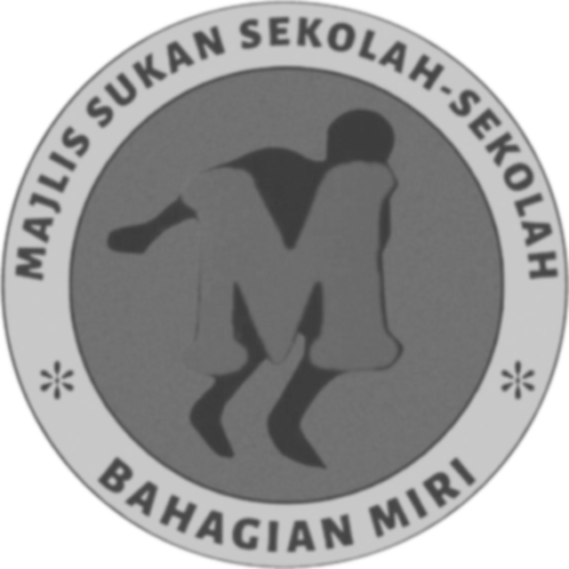
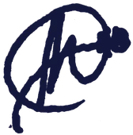

Cari sijil murid
Masukkan nombor kad pengenalan (MyKid) atau nombor sijil lahir murid. Sijil disediakan untuk pemenang tempat pertama hingga keempat bagi setiap kategori.

KEJOHANAN SKUASY
SEKOLAH RENDAH / SEKOLAH MENENGAH
MAJLIS SUKAN SEKOLAH BAHAGIAN (MSSB) MIRI 2026
Sijil Pencapaian
Dengan ini disahkan bahawa
No. KP:
telah mendapat tempat
dalam kategori
bertempat di
Gelanggang Skuasy SK Jalan Bintang
pada
13-17 April 2026

MOHAMAD YUSUF BIN ABU BAKAR
Guru Besar
Sekolah Kebangsaan Jalan Bintang, Miri